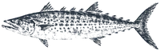
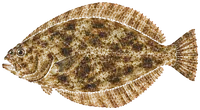
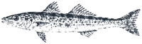
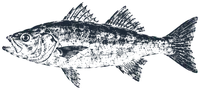
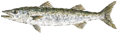
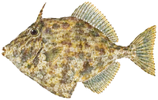
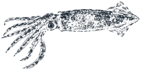
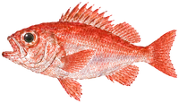

アオリイカ富山湾では「秋のイカ」
アオリイカ富山湾では「秋のイカ」 ブリ冬の富山湾の主役
ブリ冬の富山湾の主役
サゴシサワラの若いもの カサゴ岩の間にすむ根魚
カサゴ岩の間にすむ根魚
ヒラメ砂の上で待ち伏せする、平たい魚 アジ富山湾では一年中、定置網で獲れる身近な魚
アジ富山湾では一年中、定置網で獲れる身近な魚
シロギス砂地の上品な小魚 タチウオ立って泳ぐ、銀色の刀
タチウオ立って泳ぐ、銀色の刀 マダイ春、産卵のために浅場へ寄る「乗っ込み」で知られる
マダイ春、産卵のために浅場へ寄る「乗っ込み」で知られる
スズキ河口や港にもいる、大きくなる出世魚 クロダイ何でも食べる、岸近くの黒い鯛
クロダイ何でも食べる、岸近くの黒い鯛
カマス秋の富山湾で、群れで獲れる細長い魚 メバル大きな目の根魚
メバル大きな目の根魚
カワハギエサだけ取っていく名人
ケンサキイカ夏の夜のイカ
アカムツ水深100m超の深場にすむ、口の中が黒い高級魚富山湾の数字は、富山県水産研究所の論文や漁況報告から。漁獲量（網の水揚げ）は、釣れやすさとは別物です。
今日の「釣れそう度」を釣果予報で見る →